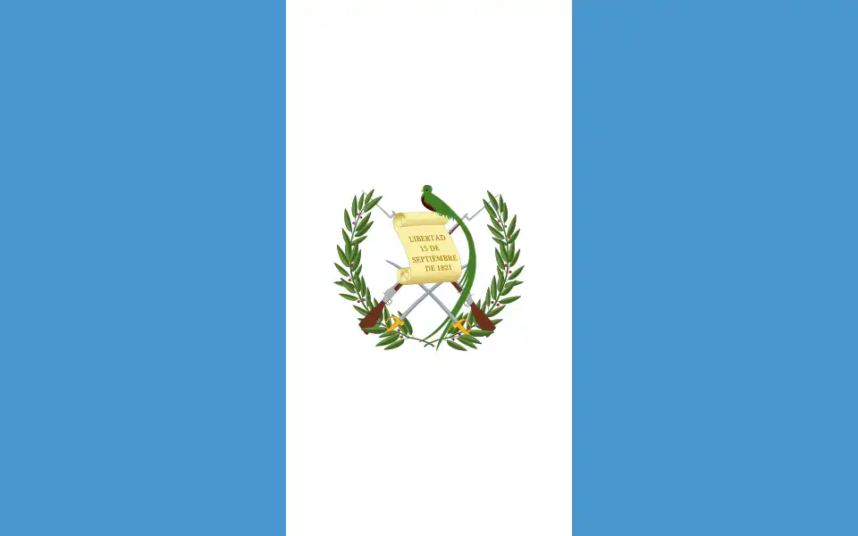

Rodrigo Hernandez
About Me
My name is Rodrigo Hernandez. I am from Guatemala and I am currently studying Web Development. I enjoy playing video games and spending time with my family.
Guatemala

Guatemala is a vibrant Central American country famous for its lush rainforests, majestic volcanoes, and rich Indigenous Maya culture. Stretching from the Caribbean coast to the Pacific Ocean, it offers travelers a spectacular mix of ancient archaeological sites, colonial architecture, and beautiful highland lakes.